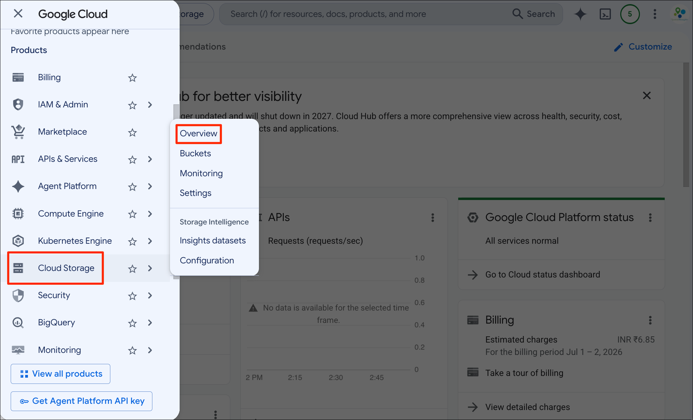
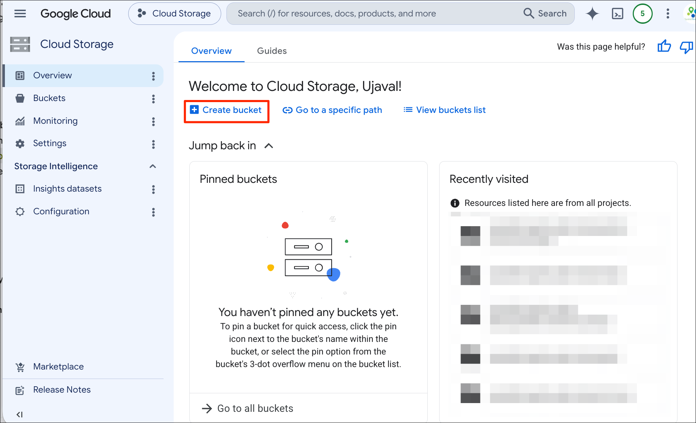
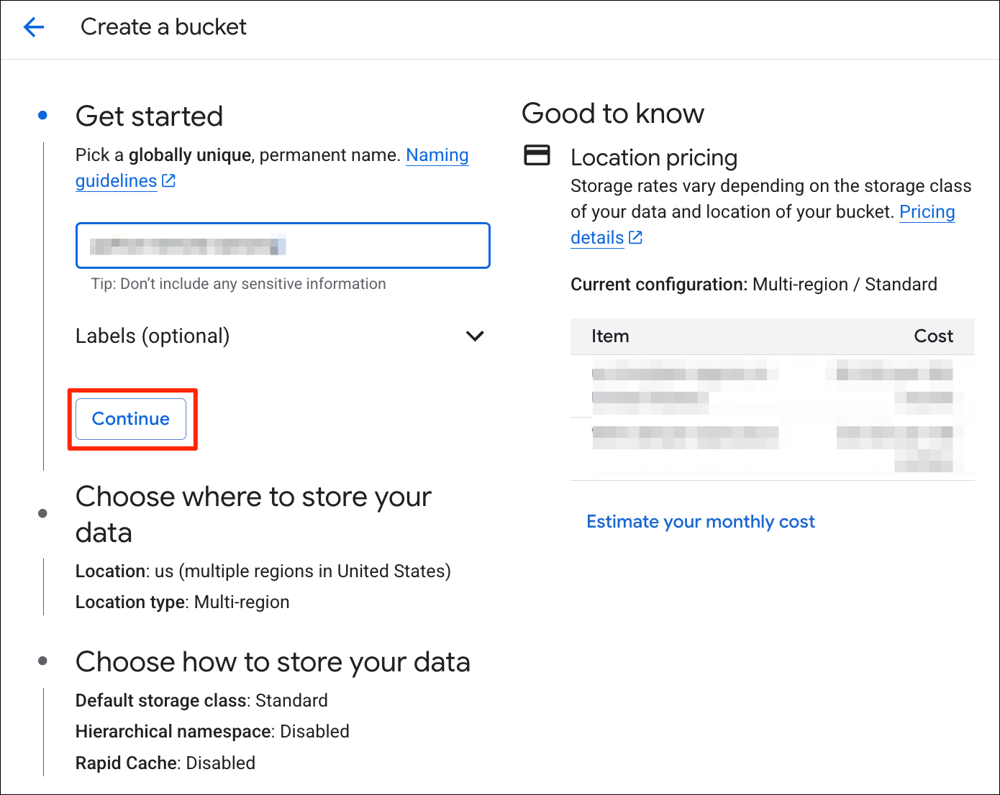
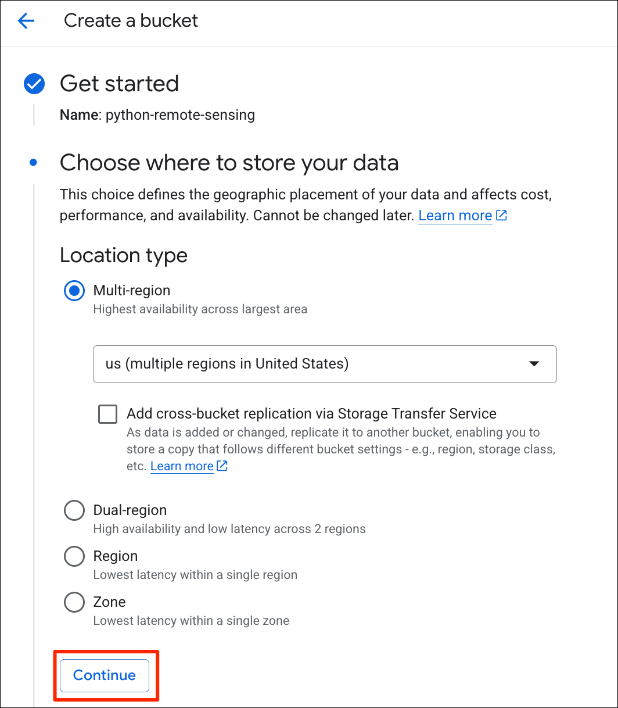
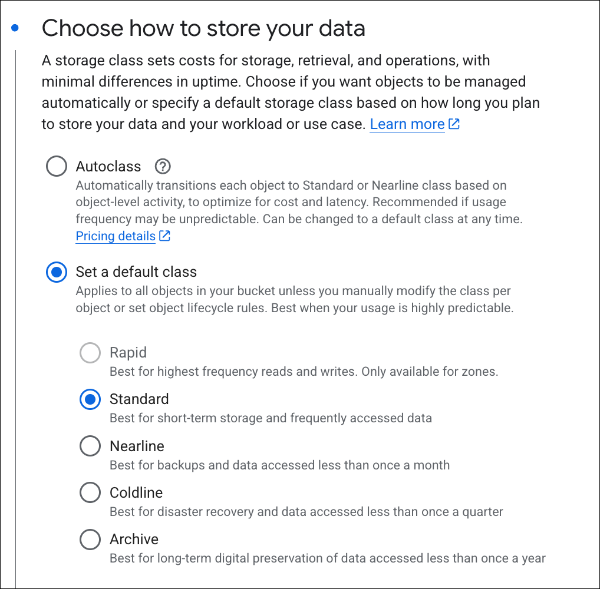
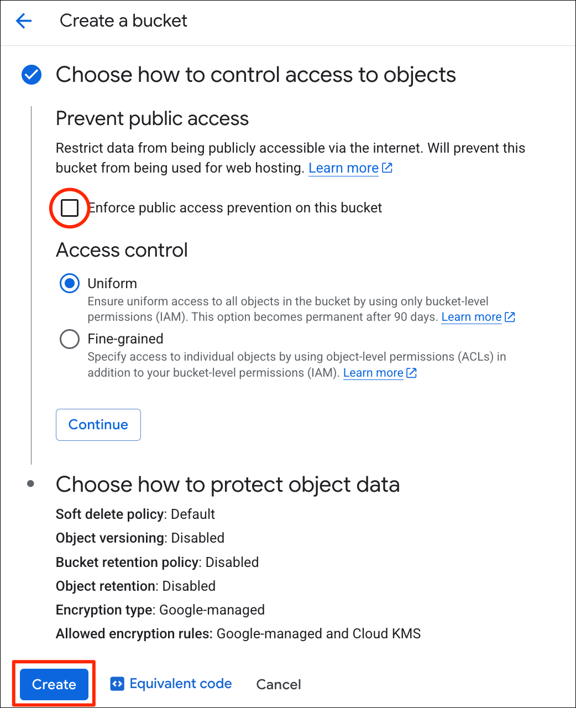
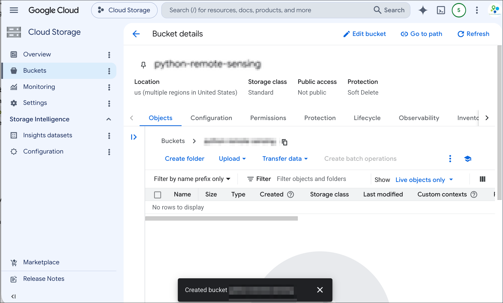

Google Cloud Storage is a data storage service that allows you to store binary and unstructured data. It is a cheap and fast option to store geospatial data in cloud-optimized formats such as Cloud Optimized GeoTIFFs (COGs), Zarr archives and GeoParquet files. This guide will show you how to use this service to activate the service, create a bucket, configure it for public access and upload your data.
This is a simplified guide for our course participants and not an official document. Refer to the Google Cloud Storage Documentation for official instructions.
To use the Google Cloud Storage service, you must have a Google Cloud Project with billing enabled. See our Google Cloud Sign-up Guide to learn how to setup a project and enable billing.
A Bucket is the top-level container in Google Cloud Storage. It is like a folder that can contain other folders and files. Let’s create a bucket.


gs://<my-bucket-name> without referring to a project
or an account name. Once you find a unique name for your bucket, click
Continue.




If you want to report any issues with this page, please comment below.